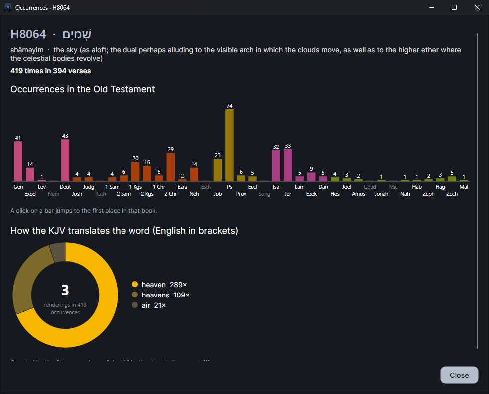
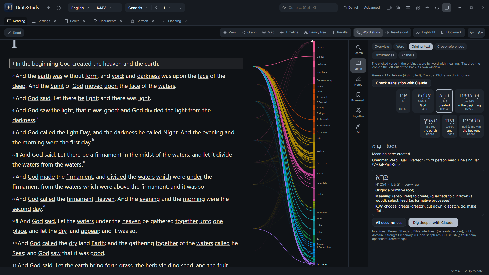
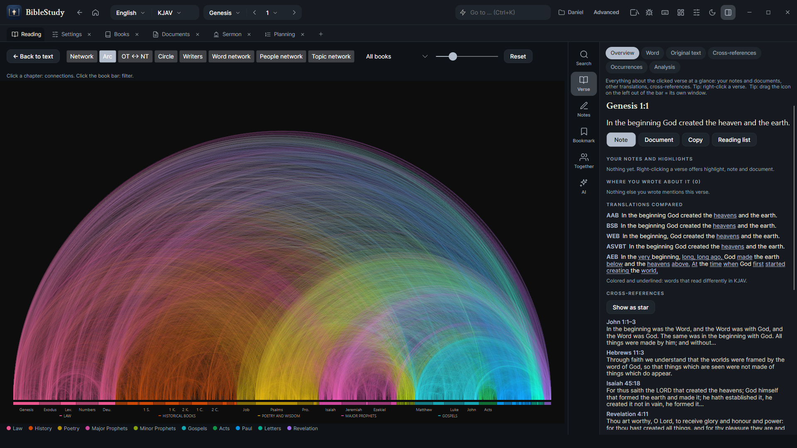
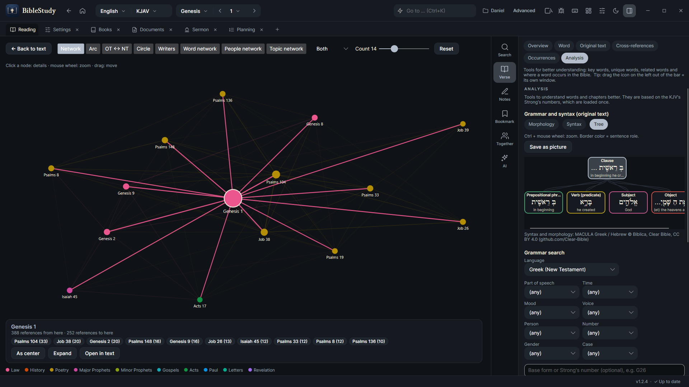
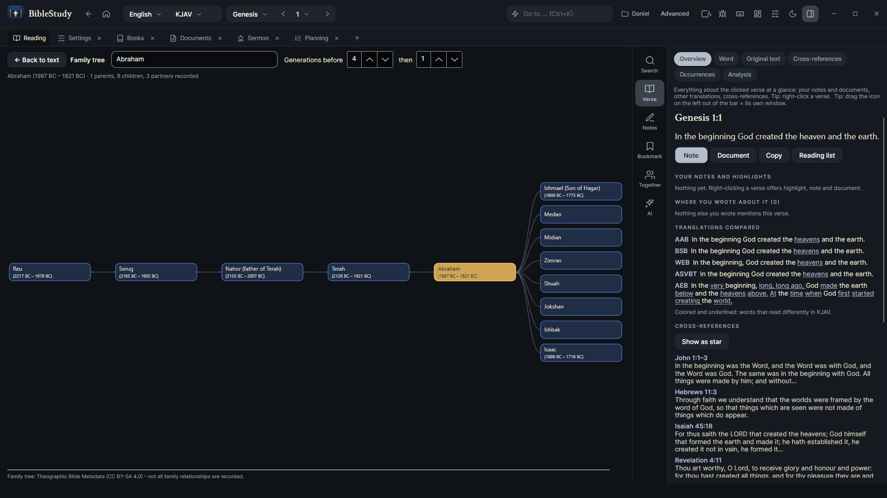

Serious tools. Zero price tag.
Programs of this depth usually cost hundreds. This one is free, open source and yours to keep.
A look at the program.
Real screenshots, taken in the English version. Click any picture to enlarge it.





Every translation, side by side.
Open as many free translations as you like in parallel columns. Differences light up, scrolling stays in sync, and the words of Jesus can have their own color.
BSB
Therefore, there is now no condemnation for those who are in Christ Jesus.KJV
There is therefore now no condemnation to them which are in Christ Jesus, who walk not after the flesh.WEB
There is therefore now no condemnation to those who are in Christ Jesus, who don’t walk according to the flesh.- Parallel columns with their own passage per column
- Differences highlighted between translations
- Full-text search – words, phrases, Strong’s numbers, people and places
- Audio Bible – listen chapter after chapter (spoken World English Bible, public domain)
- Ctrl+K opens any passage or command instantly
Go back to the Greek and Hebrew.
Click a word and see the original, its meaning, every occurrence – and how the sentence is built.
- Morphology – tense, case, person for every word
- Syntax – subject, verb and object of each clause
- Strong’s dictionary and word distribution across all books
- Learn Greek & Hebrew – alphabets, quiz, spaced-repetition vocabulary
See how Scripture explains Scripture.
- Cross references as graph, network and arc diagram
- People & places of the Bible dictionary
- Timeline with map, journeys and a family tree
Follow the journeys.
- Map of places, hits and routes
- Timeline from Abraham to the apostles
Your notes. Linked to the text.
Highlight, write, tag and link – like Obsidian, but wired into the Bible. Everything stays on your computer, as plain files you own.
The Word (Logos)
See [[John 1:1]] and [[Genesis 1:1]]: the same opening, the same act of creating by speaking.
#christology#creation#john
“In the beginning was the Word …”
- Highlights, notes, documents with folders, categories and tags
- Wiki links and a knowledge graph of everything you wrote
- Sermon editor with outline, handout, slides and PDF export
- Reading plans, to-dos, prayer list and backups
Connect directly with one person – encrypted, no server, no account. Chat, share verses, follow each other’s place.
Extend the program with plugins. An MCP server lets your own Claude operate it – nothing leaves your machine unless you want it.
Warm paper or deep night, many accent colors, a distraction-free focus mode and your own color for the words of Jesus.
English, Deutsch, Español, Français and Русский – more can be added as a simple JSON file.
Updates are only installed with your consent, after a backup – and you can go back to any earlier version.
No ads, no subscription, no account. Open source for anyone to read, improve and share.
Legal sources only
Every translation and dataset is public domain or freely licensed. The license is shown in the program – under Settings → Sources and licenses and in every footer.
Your data stays yours
Notes, vaults and settings live on your computer. The program only goes online to fetch texts you ask for and to look for updates. No analytics.
Open and honest
Not code-signed yet, so Windows may warn on the first start (“More info → Run anyway”). Every release comes with checksums.
Add your own language
Your language is missing? Any AI can translate the program for you in a few minutes.
- In BibleStudy open Settings → Language → Save template and AI instruction.
- Give both files to an AI (for example Claude) and paste the text below, with your language instead of <language>.
- Save the answer as a file named with the language code, for example
it.json. - Import it under Settings → Language → Import language file and restart.
Translate the program texts in the attached JSON file into <language>.
1. Keep every KEY exactly as it is. Translate only the VALUES.
2. Set "@name" to the name of the language written in that language itself.
3. Keep placeholders such as {0}, {1}, {2:N0} and line breaks (\n) exactly, and the same number of them.
4. Keep symbols and arrows and shortcut names (Ctrl+K). Keep proper names; Bible book names follow the usual names in the language.
5. Use the friendly, short style of a program interface. Words on buttons stay short.
6. Answer with the complete JSON file only, nothing before or after, valid JSON (UTF-8).
Texts without a translation stay German – nothing breaks. After an update you can export only the missing texts.
Open your Bible. Dig in.
Download takes a minute. No sign-up. Windows, Linux and macOS.